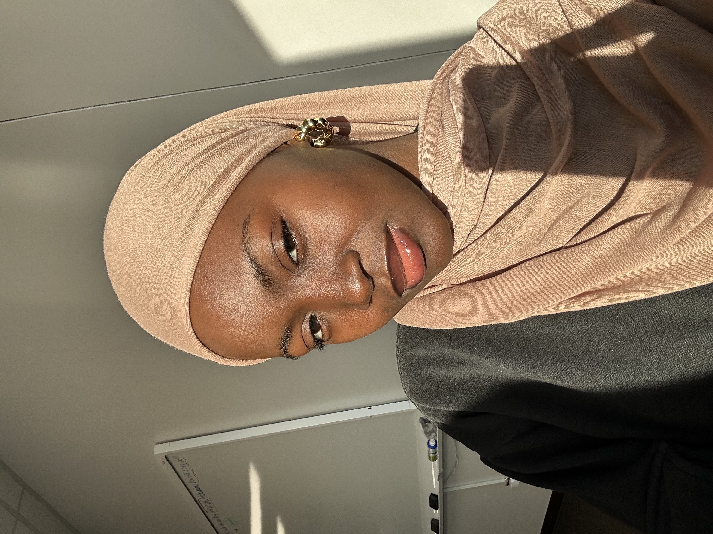
About Me
Hi, I'm Lateefat Obisesan. I am a software developer and product designer with a strong interest in building creative and functional digital experiences.
My background also includes experience in client service and office administration. These roles helped me develop strong communication, organization, and problem-solving skills, which I now bring into my work in technology and product design.
I enjoy combining creativity with technical skills to design solutions that are both useful and engaging for people. My work focuses on clean design, thoughtful user experiences, and writing efficient code.
Outside of my professional work, I enjoy creative hobbies such as crocheting and photography. I like capturing nature and moments that reflect calm, creativity, and attention to detail.
I am always learning new technologies and improving my skills as I continue growing as a developer, designer, and professional.
Moments & Creativity
Photos of Me
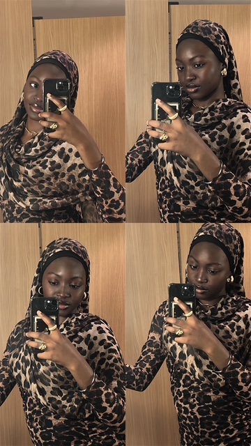
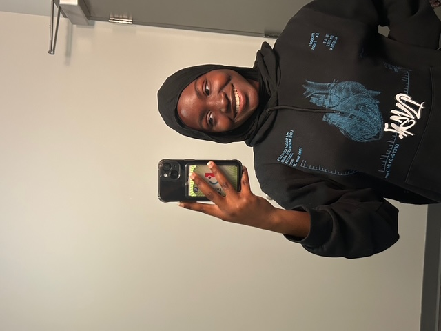
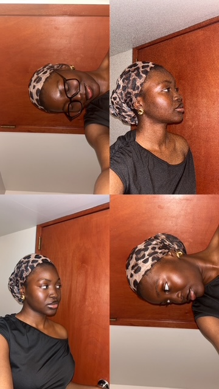
Nature Photography
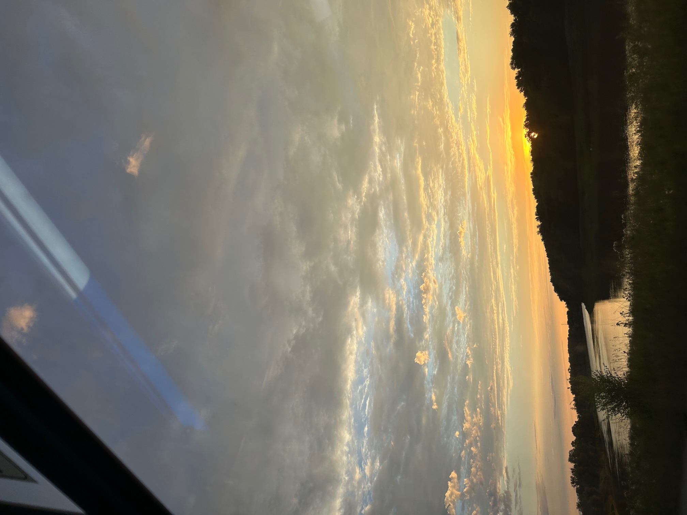

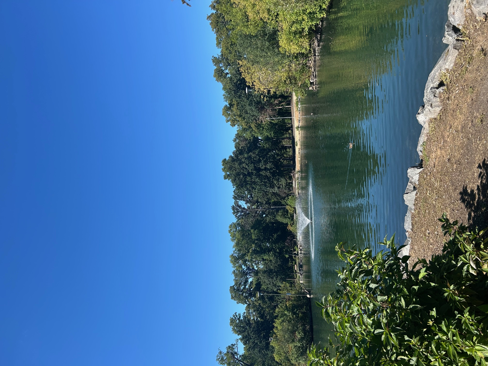
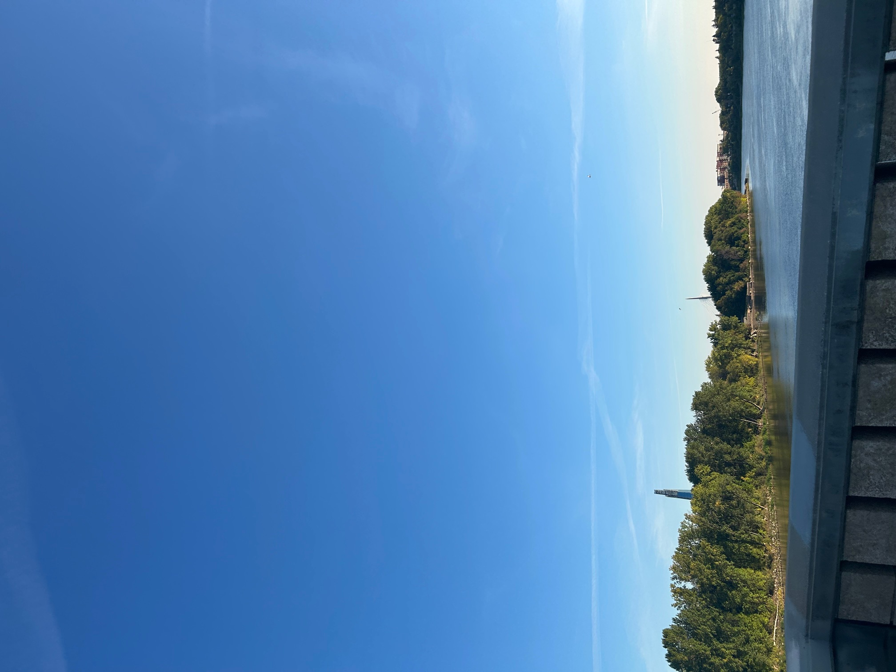
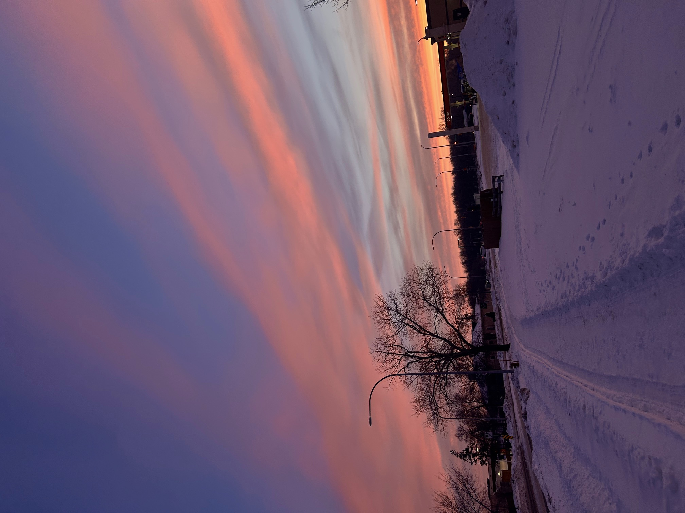
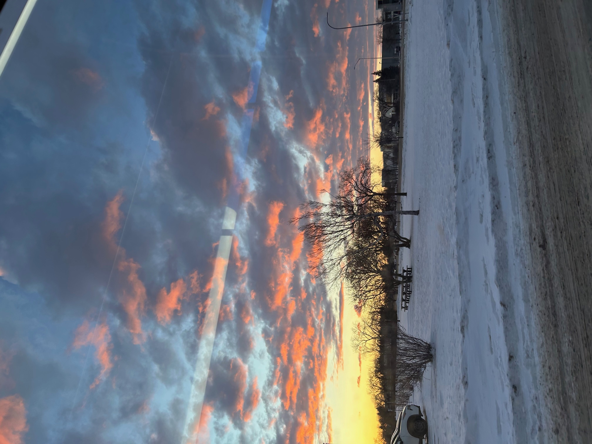
Crochet Work
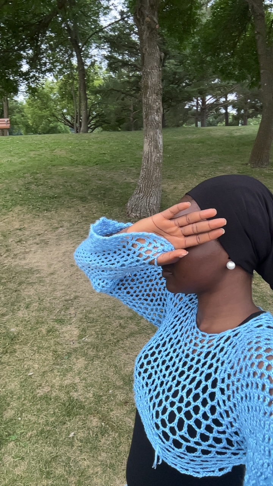
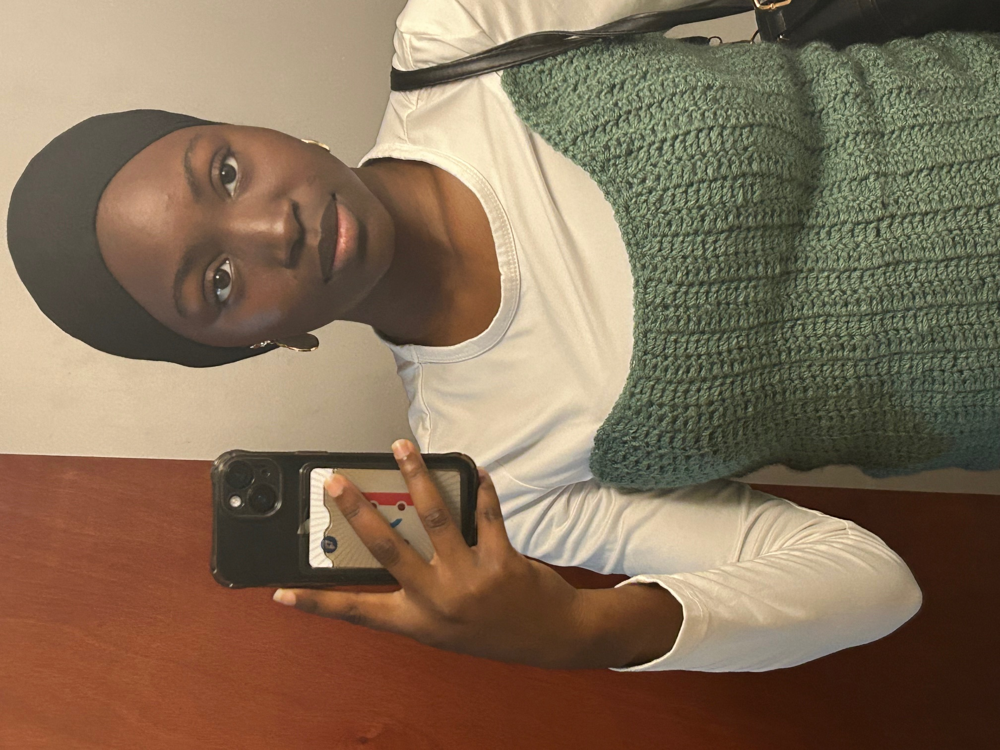